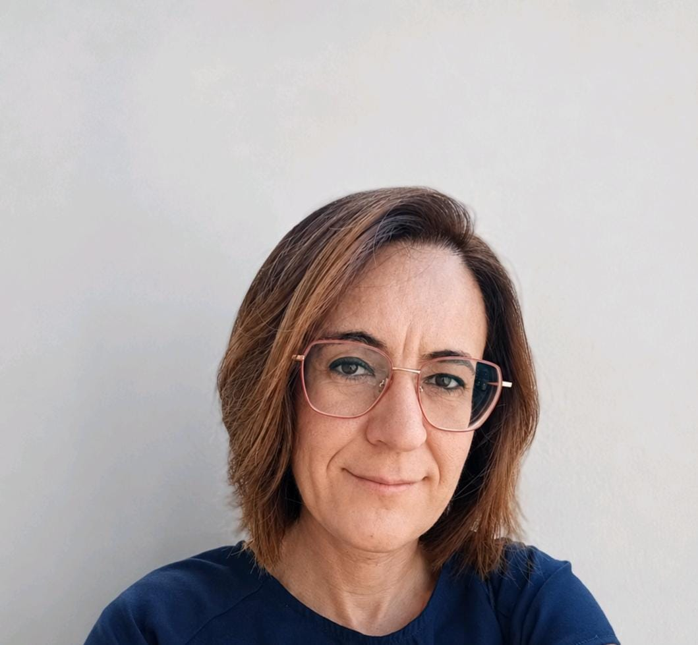
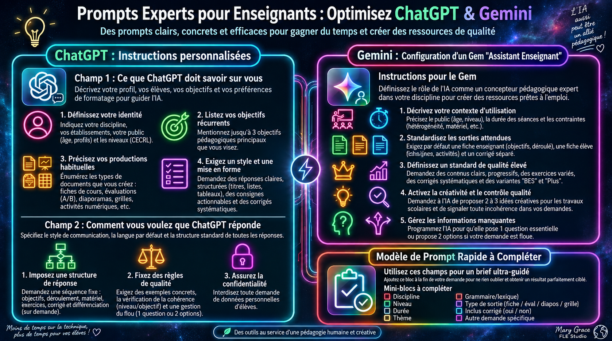
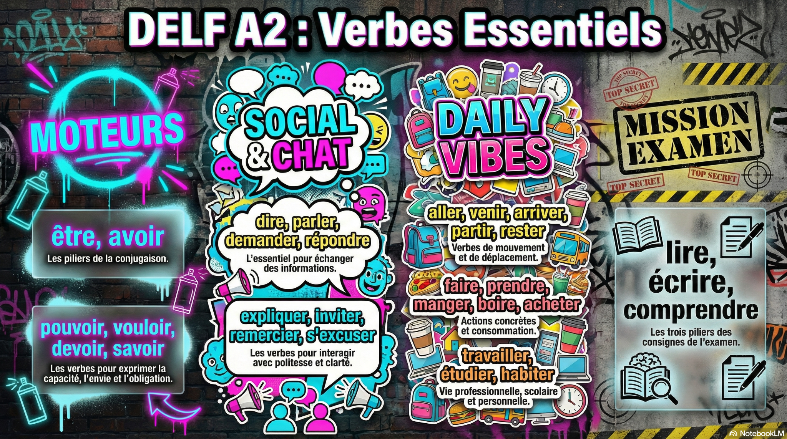

Des ateliers réellement pratiques
IA générative, prompting, ChatGPT, Gemini, NotebookLM, création de ressources, différenciation et usages concrets pour enseignants et formateurs.
Enseignante et formatrice en langues depuis près de vingt ans, spécialisée en FLE, préparation DELF/DALF, formation des enseignants et intégration concrète de l’intelligence artificielle dans les pratiques pédagogiques.

Mon parcours s’est construit entre l’Italie et la France auprès d’enfants, d’adolescents, d’adultes, d’enseignants et de candidats aux certifications linguistiques. Je conçois des formations et des ressources où le numérique et l’IA restent toujours au service d’un objectif pédagogique clair.
IA générative, prompting, ChatGPT, Gemini, NotebookLM, création de ressources, différenciation et usages concrets pour enseignants et formateurs.
Scénarios pédagogiques, activités interactives, supports numériques, enseignement en ligne et préparation aux certifications.
Enseignants, adolescents, adultes, apprenants FLE, groupes en ligne et candidats DELF/DALF.
Une sélection volontairement courte pour montrer mes principaux axes de travail.
Atelier avancé de 10 heures : environnement IA personnalisé, cahier des charges pédagogique, prototype de site interactif, différenciation, tests et finalisation.
Support visuel de formation consacré à l’optimisation de ChatGPT et Gemini : instructions personnalisées, configuration d’un Gem, standards de sortie, contrôle qualité et brief ultra-guidé.
Support de 15 pages consacré à la préparation de l’oral : architecture de l’épreuve, stratégie 20+10, construction du discours, argumentation, nuances et connecteurs.
Exemple de micro-environnement pédagogique interactif conçu pour faire travailler le lexique et les structures en contexte, avec une logique de mission et de progression.

Exemple de support de formation qui traduit l’IA en gestes pédagogiques concrets : cadrer, guider, standardiser et contrôler les sorties.

Exemple de ressource visuelle structurée autour des verbes fondamentaux utiles à l’examen et à la communication quotidienne.
Télécharger l’image ↓Glossaire illustré français–italien au design immersif, conçu pour rendre le lexique mémorable et favoriser la discussion en classe.
Choisissez un objectif. Cette mini-démonstration montre la logique de conception utilisée dans mes formations : l’outil vient après la pédagogie, jamais avant.
Mes interventions sont modulables selon le public, les objectifs et le contexte de l’établissement, en présentiel ou à distance.
{kind=link}
{kind=link}